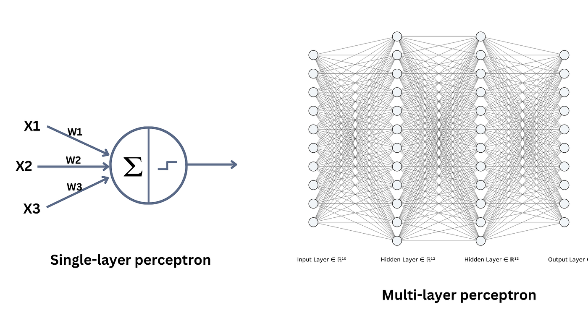
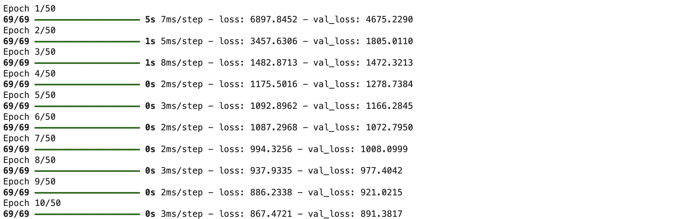

The purpose of this notebook is to explore the effectiveness of different machine learning models in predicting COPD and compare their performance relative to one another. It is important to experiment with various models because each machine learning algorithm has its strengths and weaknesses, and understanding how different models perform on the same problem helps in making more informed decisions about which model to deploy. For example, while Random Forest (RF) is often considered reliable due to its ability to handle complex, high-dimensional datasets and its robustness to overfitting, other models like Support Vector Machine (SVM) and Multi-Layer Perceptron (MLP) may offer different advantages, such as better generalization, handling of non-linear relationships, or the ability to learn deep representations. Trying out these models ensures we capture the best possible predictive power for COPD prediction.
In scikit-learn, there are built-in tools that facilitate the implementation of various machine learning models. By comparing models such as Random Forest, SVM, and MLP, we gain a clearer understanding of which algorithm best suits the problem at hand. For this demonstration, we will focus on the PA_Spring dataset, as prior analysis showed that while there are seasonal differences, they do not significantly affect the predictive performance across different models. Moreover, we will use the dataset after dimensionality reduction to ensure the comparison is focused on the models rather than the choice of predictors.
It is worth noting that the deep learning model (MLP) will be run on Google Colab, as running deep learning models locally might not be efficient. Training deep neural networks can be computationally intensive and take a long time, especially when dealing with large datasets or complex models. Google Colab offers access to GPUs, which can significantly speed up training times and make the process more efficient.
Code
import numpy as npimport pandas as pdimport geopandas as gpdimport seaborn as snsimport matplotlib.pyplot as pltfrom sklearn.pipeline import Pipelinefrom sklearn.model_selection import train_test_split, KFoldfrom sklearn.svm import SVRfrom sklearn.metrics import make_scorer, mean_squared_error, r2_score, mean_absolute_errorfrom sklearn.preprocessing import StandardScalerfrom sklearn.linear_model import LinearRegressionfrom sklearn.ensemble import RandomForestRegressorimport tensorflow as tffrom scipy.stats import normimport warningswarnings.filterwarnings('ignore')
Support Vector Machine
A Support Vector Machine (SVM) is a supervised machine learning model used for both classification and regression tasks. The core idea behind SVM is to find a hyperplane that best separates the data points into different classes or predicts continuous outcomes (in the case of regression).
For regression, SVM works by finding a function that fits the data while keeping as many data points as possible within a certain margin (controlled by the epsilon parameter). The goal is to minimize the error, but the model is allowed to have some margin of tolerance for errors, which is controlled by epsilon.
Kernel: The kernel function allows SVM to operate in higher-dimensional spaces, enabling it to find non-linear decision boundaries. Common kernels include linear, radial basis function (RBF), and polynomial. The RBF kernel is commonly used for problems where the relationship between features is non-linear.
C: This is a regularization parameter that controls the trade-off between achieving a low error on the training set and maintaining a simple, generalizable model. A large C aims to fit the training data as well as possible (but may lead to overfitting), while a small C allows some error to get a smoother decision boundary.
Epsilon (ε): In the case of SVR, epsilon defines a margin of tolerance where no penalty is given for points that lie within this margin. It controls the width of the tube within which the model tries to fit the data points.
The rational behind SVM is to find the optimal hyperplane that maximizes the margin (distance between the nearest data points of each class or the closest regression data points) because this maximization helps in achieving better generalization on unseen data.
The function train_and_evaluate_svm is designed to train and evaluate a svm model for regression tasks using the Support Vector Regression (SVR) algorithm. It takes in training and test datasets, as well as optional parameters for the SVM model such as the kernel type (defaulted to RBF), the regularization parameter C, and the epsilon parameter that controls the margin of tolerance for errors. First, the model is trained on the training data using the fit() method. It then generates predictions on the test data with the predict() method. The function calculates performance metrics, including the Mean Squared Error (MSE), Root Mean Squared Error (RMSE), and R-squared (R2) values, which help assess the model’s accuracy and its ability to explain the variance in the target variable. The function returns these metrics in a dictionary for easy comparison with other models.
A Multi-Layer Perceptron (MLP) is a type of artificial neural network commonly used for regression and classification tasks. It consists of multiple layers of neurons, where each neuron is connected to every neuron in the previous and subsequent layers, forming a fully connected network. The MLP learns by adjusting the weights of these connections based on the errors in predictions, using algorithms such as backpropagation. The core idea behind an MLP is that the network can model complex relationships in data by leveraging non-linear activations (e.g., ReLU) and optimizing parameters through training.

The function train_and_evaluate_mlp defines and evaluates an MLP for regression tasks. The model consists of three dense layers: the first layer has 128 neurons with a ReLU activation function, followed by a dropout layer (with a rate of 0.2 to prevent overfitting), and a second dense layer with 64 neurons and another dropout layer. The final output layer is a single neuron, as it’s a regression problem. The model is compiled using the Adam optimizer and mean squared error loss function. The fit() method trains the model using the provided training data, with specified hyperparameters like the number of epochs (defaulted to 50), batch size (32), and a validation split of 0.2 (20% of the data is used for validation during training). After training, predictions are made on the test set, and performance metrics like RMSE and R2 are calculated to evaluate the model’s accuracy and explanatory power.
It is important to note that there are many ways to design an MLP. For instance, the number of layers, the number of neurons per layer, activation functions, dropout rates, and optimization algorithms can all be adjusted based on the dataset and problem complexity. Advanced variations may also incorporate techniques like batch normalization, different regularization methods, or custom learning schedules to improve performance. This flexibility allows MLPs to be tailored to specific tasks, but it also introduces challenges in choosing the best architecture for a given problem.
def train_and_evaluate_mlp(X_train_scaled, X_test_scaled, y_train, y_test, epochs=50, batch_size=32, validation_split=0.2):# Define the MLP model model = tf.keras.Sequential([ tf.keras.layers.Dense(128, activation='relu', input_shape=(X_train_scaled.shape[1],)), tf.keras.layers.Dropout(0.2), # Dropout layer with dropout rate of 0.2 tf.keras.layers.Dense(64, activation='relu'), tf.keras.layers.Dropout(0.2), # Dropout layer with dropout rate of 0.2 tf.keras.layers.Dense(1) # Output layer ])# Compile the model model.compile(optimizer='adam', loss='mean_squared_error')# Train the model history = model.fit(X_train_scaled, y_train, epochs=epochs, batch_size=batch_size, validation_split=validation_split)# Make predictions predictions_mlp = model.predict(X_test_scaled)# Calculate metrics mse_mlp = mean_squared_error(y_test, predictions_mlp) rmse_mlp = np.sqrt(mse_mlp) r2_mlp = r2_score(y_test, predictions_mlp)return {'rmse': rmse_mlp,'r2': r2_mlp }
Results Comparison and Discussion
In this section, we load the spring data, using dimensionality-reduced predictor sets, and run all three models: Support Vector Machine (SVM), Random Forest (RF), and Multi-Layer Perceptron (MLP). We compute R² and RMSE metrics for each model to evaluate and compare their performances. It is worth noting that the MLP is run on Google Colab due to the computational demands of training over 50 epochs. Each epoch refers to a complete pass through the training data during model training. The number of epochs impacts how well the model learns patterns in the data, with more epochs generally allowing for improved learning but also risking overfitting if the model trains too long.
 Training Process on Google Colab
Machine Learning Model
R² Score (Coefficient of Determination)
RMSE (Root Mean Squared Error)
Support Vector Machine
0.34
27.12
Random Forest
0.527
23.07
Multi-Layer Perceptron
0.520
23.25
These results indicate that both Random Forest and MLP outperform SVM in terms of both R² and RMSE. This is likely because SVMs, while effective for smaller datasets or simpler relationships, may struggle with complex, non-linear interactions present in this dataset. The flexibility of Random Forest and MLP allows them to better capture such patterns, giving them an edge over SVM.
However, the similarity in performance between Random Forest and MLP raises important questions. MLP, a deep learning approach, is expected to outperform simpler models like Random Forest in theory, especially as the complexity of the data increases. However, this is not the case here. Possible reasons include:
The dimensionality-reduced data may already represent the predictors well, reducing the advantage deep learning would gain from more complex feature interactions.
Deep learning often benefits from much larger datasets; here, the sample size (~3000) may not be sufficient to realize its full potential.
Hyperparameters such as the number of neurons, layers, and epochs in the MLP might not be fully optimized.
Random Forest’s ensemble nature inherently reduces overfitting, making it robust and highly effective even in smaller datasets.
That said, for this specific task, Random Forest emerges as a highly reliable and interpretable model, with comparable performance to MLP but less computational complexity. MLP could still be valuable if the dataset grows in size or complexity. Further hyperparameter tuning might also improve its performance. On the other hand, SVM may not be the best choice for this type of regression problem, particularly when dealing with non-linear relationships and a higher number of predictors.While these results are insightful, a more thorough comparison (e.g., additional metrics, different cross-validation schemes, or trying other algorithms like Gradient Boosting Machines) would strengthen conclusions about model effectiveness.